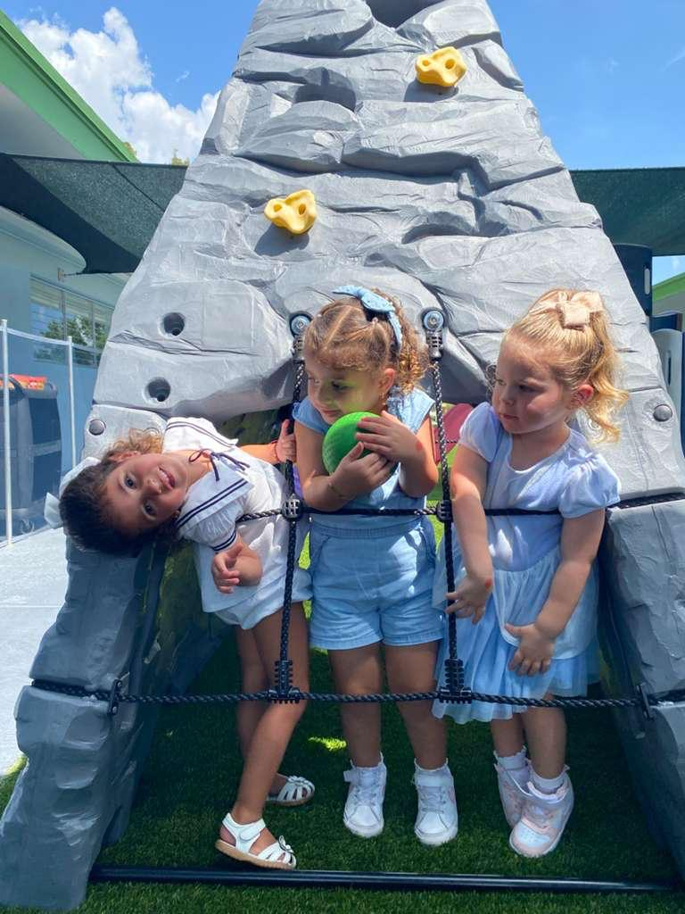
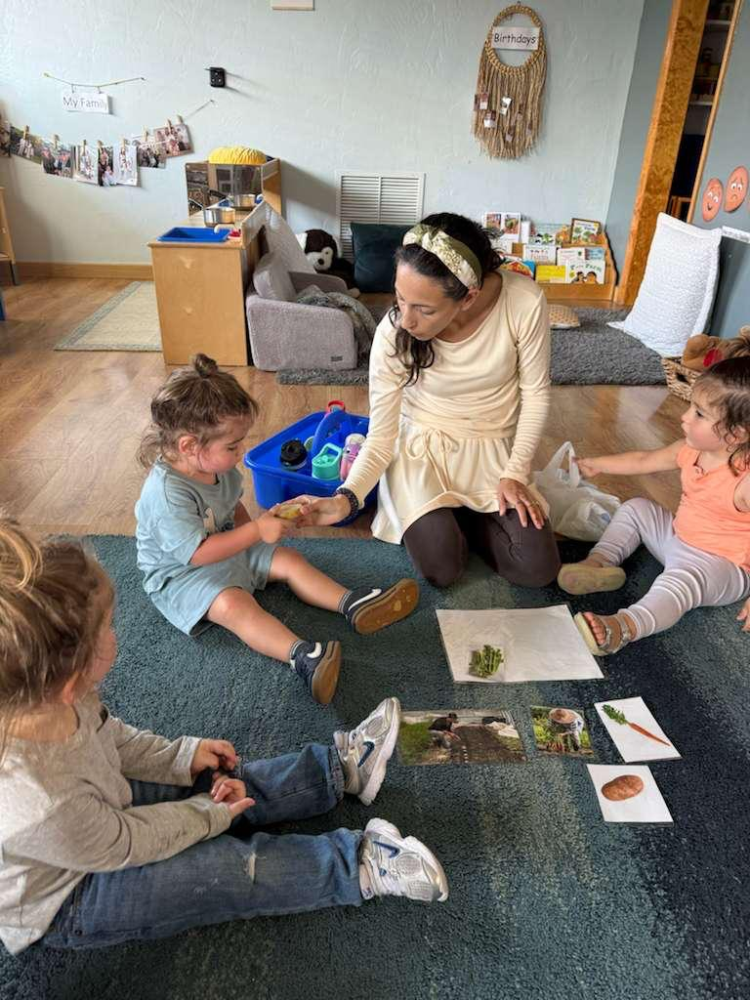
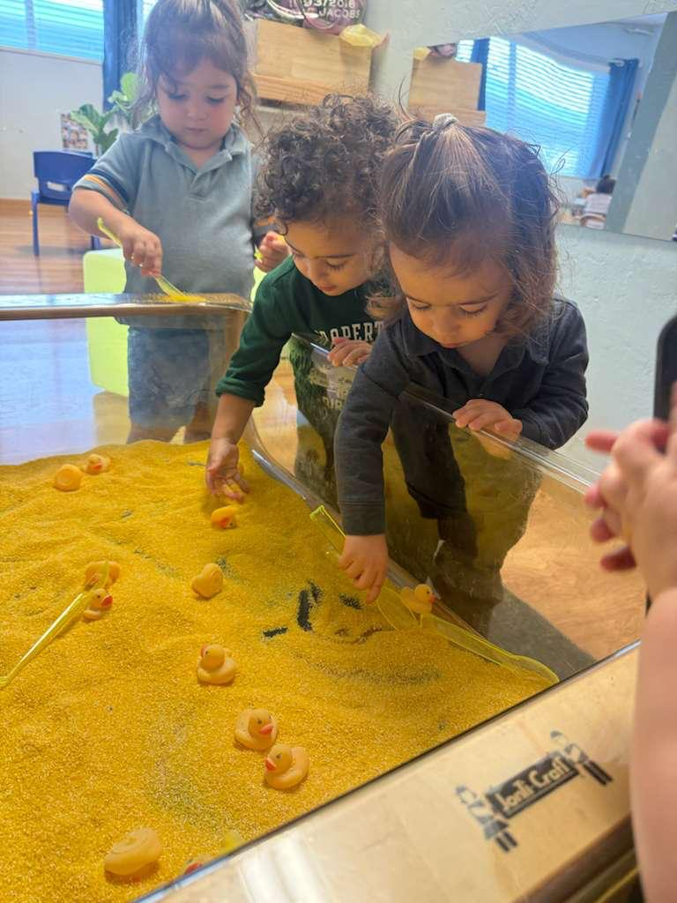
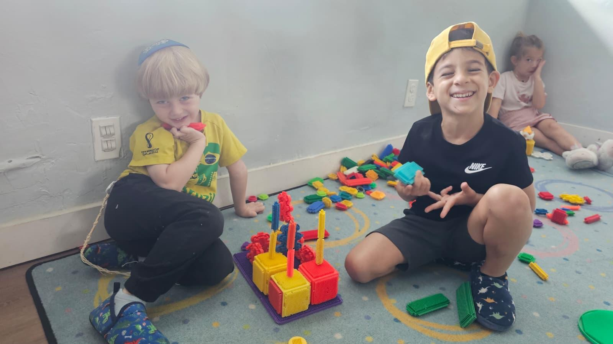

Daisies
First school rhythms, warm routines, and teachers close by.
Ages 18 months to 5 years. Four rooms, and teachers who notice the small things early.

With 11 to 20 children and 2+ teachers in each classroom, children are not waiting to be noticed. Teachers are close enough to see what is changing day by day.
They notice who needs a steadier drop-off, who is ready for more words, who wants to help carry the tray, and who is beginning to join the group on their own.

Brachos, songs, Shabbat, Hebrew words, and middot are part of the room itself. Children do not watch Jewish life from the outside. They grow up inside it in ways that feel natural.

Parents tell us they notice steadier drop-off, more language, and children doing more on their own without being pushed before they are ready.
That is what happens when the day is built around knowing each child well and meeting them where they are.
Daisies through Butterflies. Children are grouped by age, and each room has its own pace, expectations, and kind of support.
First school rhythms, warm routines, and teachers close by.
Language growing fast, play getting bigger, and plenty of repetition.
Longer projects, stronger friendships, and more independence.
PreK confidence, school readiness, and the closeness preschool children still need.
Hours: Monday through Thursday 8:30 AM to 3:15 PM. Friday 8:30 AM to 1:45 PM.


Meet the preschool team.
Ask what you want to know.
Spend time in the room before deciding.